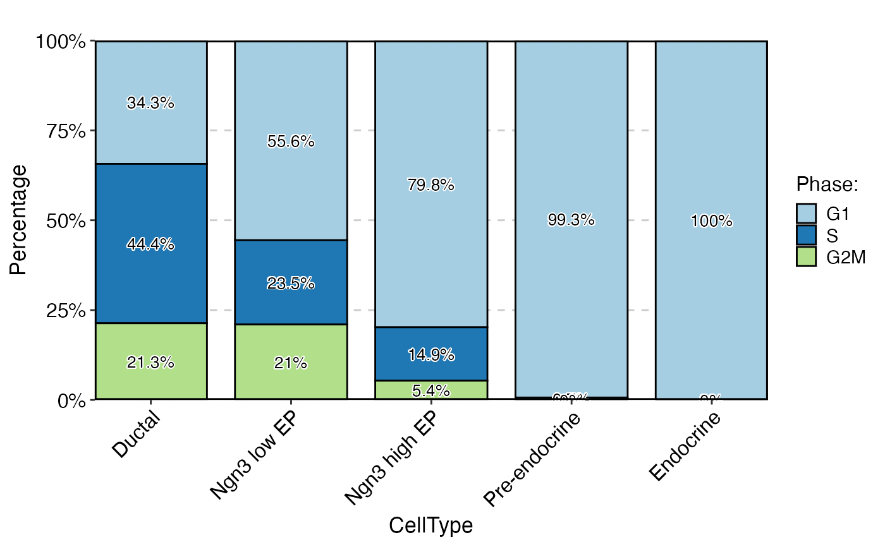
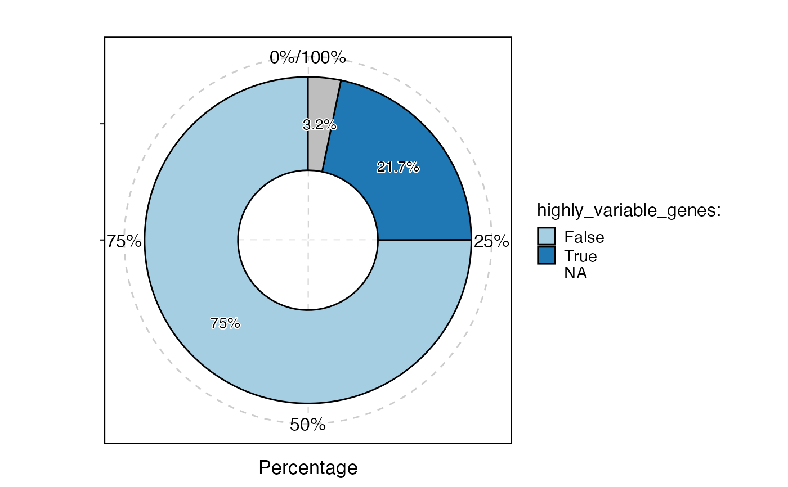
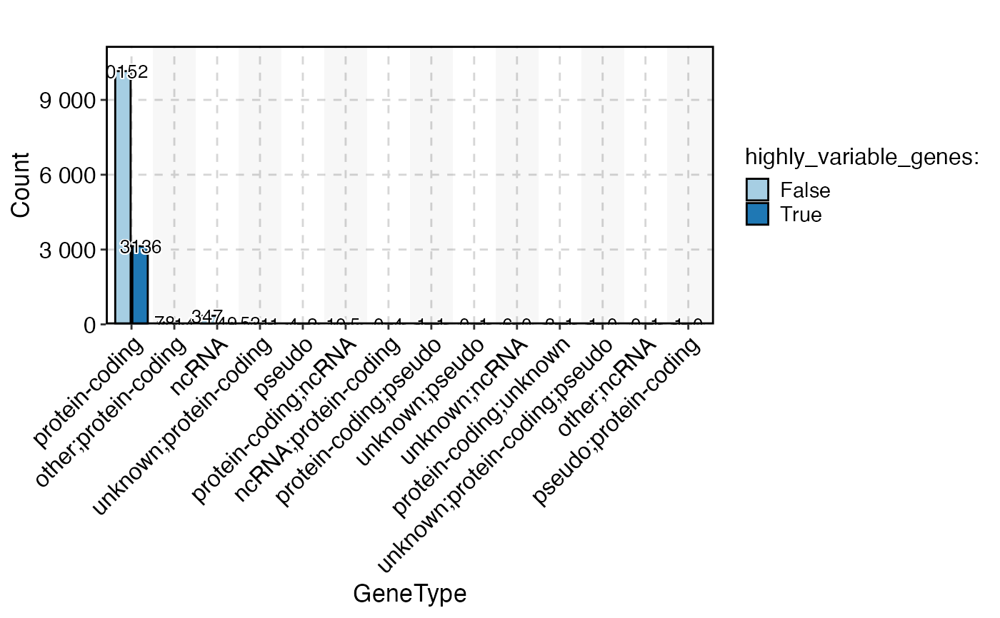

Visualizes data using various plot types such as bar plots, rose plots, ring plots, pie charts, trend plots, area plots, dot plots, sankey plots, chord plots, venn diagrams, and upset plots.
StatPlot(
meta.data,
stat.by,
group.by = NULL,
split.by = NULL,
bg.by = NULL,
flip = FALSE,
NA_color = "grey",
NA_stat = TRUE,
keep_empty = FALSE,
individual = FALSE,
stat_level = NULL,
plot_type = c("bar", "rose", "ring", "pie", "trend", "area", "dot", "sankey", "chord",
"venn", "upset"),
stat_type = c("percent", "count"),
position = c("stack", "dodge"),
palette = "Paired",
palcolor = NULL,
alpha = 1,
bg_palette = "Paired",
bg_palcolor = NULL,
bg_alpha = 0.2,
label = FALSE,
label.size = 3.5,
label.fg = "black",
label.bg = "white",
label.bg.r = 0.1,
aspect.ratio = NULL,
title = NULL,
subtitle = NULL,
xlab = NULL,
ylab = NULL,
legend.position = "right",
legend.direction = "vertical",
theme_use = "theme_scop",
theme_args = list(),
combine = TRUE,
nrow = NULL,
ncol = NULL,
byrow = TRUE,
force = FALSE,
seed = 11
)The data frame containing the data to be plotted.
The column name(s) in meta.data specifying the variable(s) to be plotted.
The column name in meta.data specifying the grouping variable.
The column name in meta.data specifying the splitting variable.
The column name in meta.data specifying the background variable for bar plots.
Logical indicating whether to flip the plot.
The color to use for missing values.
Logical indicating whether to include missing values in the plot.
Logical indicating whether to keep empty groups in the plot.
Logical indicating whether to plot individual groups separately.
The level(s) of the variable(s) specified in stat.by to include in the plot.
The type of plot to create. Can be one of "bar", "rose", "ring", "pie", "trend", "area", "dot", "sankey", "chord", "venn", or "upset".
The type of statistic to compute for the plot. Can be one of "percent" or "count".
The position adjustment for the plot. Can be one of "stack" or "dodge".
The name of the color palette to use for the plot.
The color to use in the color palette.
The transparency level for the plot.
The name of the background color palette to use for bar plots.
The color to use in the background color palette.
The transparency level for the background color in bar plots.
Logical indicating whether to add labels on the plot.
The size of the labels.
The foreground color of the labels.
The background color of the labels.
The radius of the rounded corners of the label background.
The aspect ratio of the plot.
The main title of the plot.
The subtitle of the plot.
The x-axis label of the plot.
The y-axis label of the plot.
The position of the legend in the plot. Can be one of "right", "left", "bottom", "top", or "none".
The direction of the legend in the plot. Can be one of "vertical" or "horizontal".
The name of the theme to use for the plot. Can be one of the predefined themes or a custom theme.
A list of arguments to be passed to the theme function.
Logical indicating whether to combine multiple plots into a single plot.
The number of rows in the combined plot.
The number of columns in the combined plot.
Logical indicating whether to fill the plot by row or by column.
Logical indicating whether to force the plot even if some variables have more than 100 levels.
The random seed to use for reproducible results.
data("pancreas_sub")
head(pancreas_sub@meta.data)
#> orig.ident nCount_RNA nFeature_RNA S_score G2M_score nCount_spliced nFeature_spliced
#> CAGCCGAAGCGATATA SeuratProject 10653 3295 0.33188155 0.54532743 10653 3295
#> AGTGTCATCGCCGTGA SeuratProject 4596 2053 -0.07156909 -0.08865353 4596 2053
#> GATGAAAAGTTGTAGA SeuratProject 14091 3864 0.08940628 0.77610326 14091 3864
#> CACAGTACATCCGTGG SeuratProject 5484 2510 -0.25927997 -0.25941831 5484 2510
#> CGGAGCTCATTGGGCC SeuratProject 7357 2674 -0.11764368 0.46237856 7357 2674
#> AGAGCTTGTGTGACCC SeuratProject 6498 2516 -0.11406432 -0.17830831 6498 2516
#> nCount_unspliced nFeature_unspliced CellType SubCellType Phase
#> CAGCCGAAGCGATATA 1587 1063 Ductal Ductal G2M
#> AGTGTCATCGCCGTGA 1199 803 Pre-endocrine Pre-endocrine G1
#> GATGAAAAGTTGTAGA 2166 1379 Ngn3 low EP Ngn3 low EP G2M
#> CACAGTACATCCGTGG 1339 859 Endocrine Beta G1
#> CGGAGCTCATTGGGCC 976 745 Ductal Ductal G2M
#> AGAGCTTGTGTGACCC 822 591 Ductal Ductal G1
StatPlot(pancreas_sub@meta.data, stat.by = "Phase", group.by = "CellType", plot_type = "bar", label = TRUE)

head(pancreas_sub[["RNA"]]@meta.features)
#> highly_variable_genes
#> Mrpl15 False
#> Npbwr1 <NA>
#> 4732440D04Rik False
#> Gm26901 False
#> Sntg1 True
#> Mybl1 False
StatPlot(pancreas_sub[["RNA"]]@meta.features, stat.by = "highly_variable_genes", plot_type = "ring", label = TRUE)
#> Warning: Removed 1 row containing missing values or values outside the scale range (`geom_col()`).
#> Warning: Removed 1 row containing missing values or values outside the scale range (`geom_text_repel()`).

pancreas_sub <- AnnotateFeatures(pancreas_sub, species = "Mus_musculus", IDtype = "symbol", db = "GeneType")
#> Species: Mus_musculus
#> Loading cached db: GeneType version:3.18.0 nterm:11 created:2024-11-18 14:26:32.401037
head(pancreas_sub[["RNA"]]@meta.features)
#> highly_variable_genes GeneType
#> Mrpl15 False protein-coding
#> Npbwr1 <NA> protein-coding
#> 4732440D04Rik False <NA>
#> Gm26901 False <NA>
#> Sntg1 True protein-coding
#> Mybl1 False protein-coding
StatPlot(pancreas_sub[["RNA"]]@meta.features,
stat.by = "highly_variable_genes", group.by = "GeneType",
stat_type = "count", plot_type = "bar", position = "dodge", label = TRUE, NA_stat = FALSE
)
